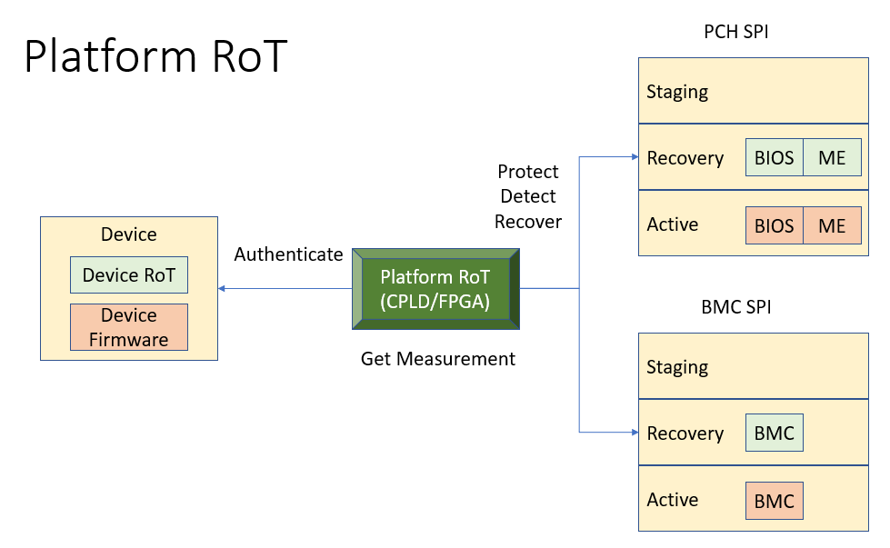
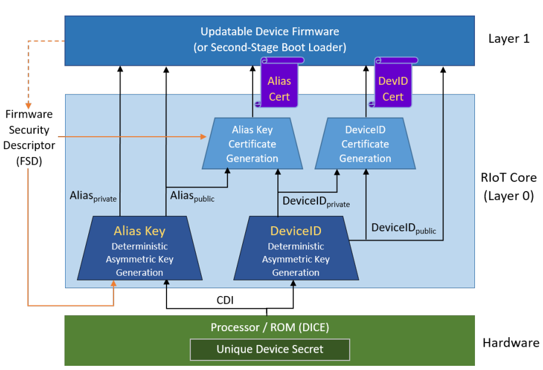
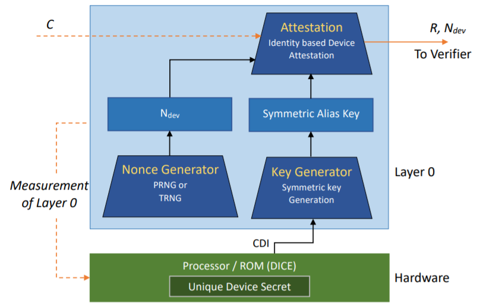
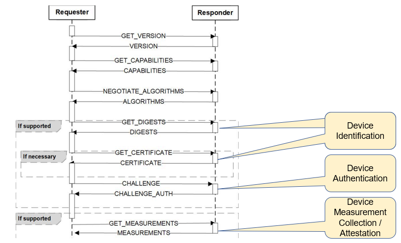
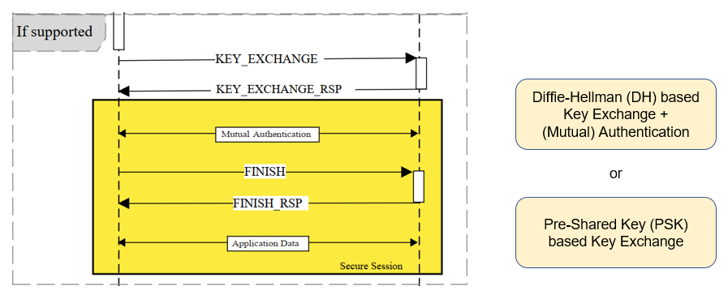
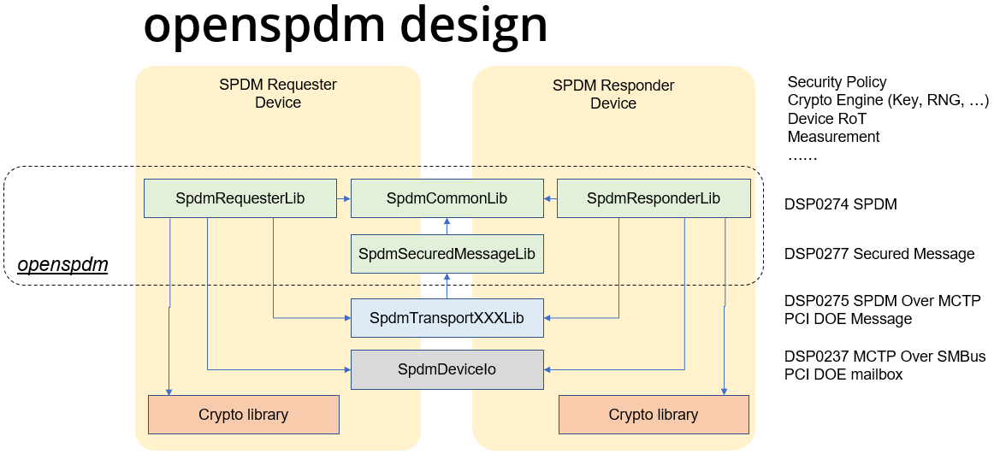
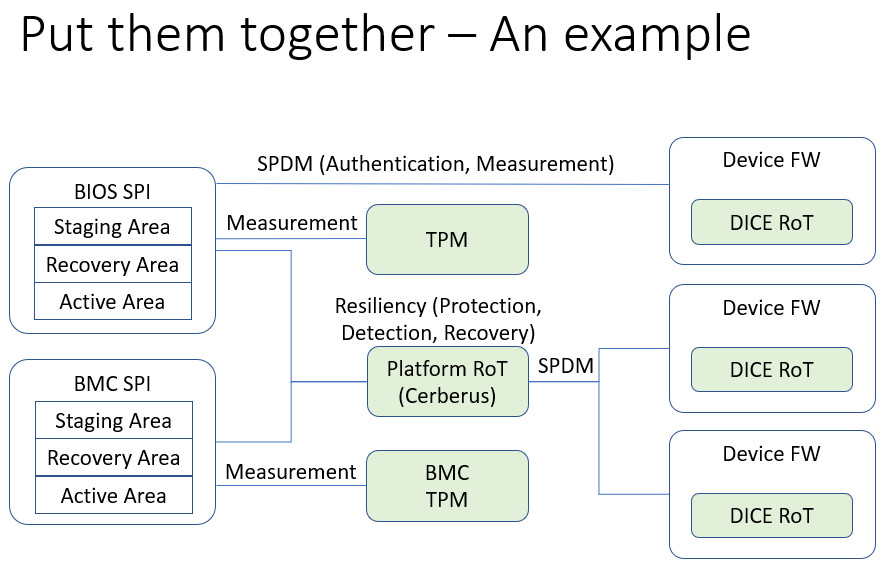

Looking Forward
In trusted boot, the goal of the measurement is to support attestation later. The TPM implements the root of trust for storage (RTS) and the root of trust for reporting (RTR). The root of trust for measurement (RTM) can be implemented in static RTM (SRTM) or dynamic RTM (DRTM). From a platform perspective, there are other ways to implement the measurement and attestation.
Platform Root of Trust - Cerberus
A platform root of trust (RoT) is an entity to authenticate the firmware on the platform. One example is the OCP Project Cerberus. The platform RoT may also collect measurements from the devices and support remote attestation. Figure 14 shows the concept of platform RoT.
Figure 14 Platform Root of Trust

Device Root of Trust - DICE
A device root of trust (RoT) is the RoT for a specific device to verify the mutable firmware and report the measurement. TCG defines the Device Identifier Composition Engine (DICE) architecture for embedded devices which do not have full TPM capability but still want to support attestation. DICE uses a layering architecture. A layered TCB architecture uses a constrained set of TCB capabilities to construct the next TCB layer. Figure 15 shows the DICE asymmetric attestation architecture. Similar to the TPM certificate, a DICE device can present a DICE certificate as the identity for the device. Figure 16 shows the DICE symmetric attestation architecture, which may be used in a resource constrain environment. For more detail, please refer to TCG DICE architecture.
Figure 15 DICE implicit identity based attestation

(source: DICE Identity)
Figure 16 DICE symmetric identity based attestation

(source: DICE symmetric Identity)
Server Management Domain Firmware
A server management domain (such as Baseboard Management Controller, also known as BMC) may have its own TPM module and SRTM because of its isolated execution environment. Table 7 shows the TPM PCR usage in a server management domain. For more details, please refer to TCG Server Management Domain Firmware Specification.
Table 7 TPM PCR Usage in Management Domain
| PCR Index | PCR Usage |
|---|---|
| 0 | SRTM and Boot Loader |
| 1 | Management Domain Configuration |
| 2 | Loadable Devices |
| 3 | Loadable Devices Configuration |
| 4 | Reserved for future |
| 5 | Reserved for future |
| 6 | Vendor Specific |
| 7 | Reserved for future |
| 8 | For management domain OS |
| 9 | For management domain OS configuration |
| 10-15 | Reserved for future |
| 16 | Debug |
| 17-23 | Reserved for future |
(Source: TCG Server)
Secure communication -- SPDM
Now we have multiple device entities on the platform. We need a secure communication mechanism. The Desktop Management Taskforce (DMTF) Secure Protocol and Data Model (SPDM) serves that purpose. SPDM defines message formats, data objects, and sequences for performing message exchanges. The protocols defined by SPDM can be used for a wide range of security functions. The SPDM protocol is similar to the network Transport Layer Security (TLS) protocol, but it is customized for the communication between two device entities.
SPDM 1.0 defines messages for hardware and firmware identification and authentication, including messages for hardware and firmware measurement collection and attestation. See Figure 17. SPDM 1.1 defines a secure session establishment mechanism between two entities by using Diffie Hellman ephemeral (DHE) or Elliptic Curve DHE (ECDHE) key exchange with asymmetric authentication such as RSA or Elliptic Curve Digital Signature Algorithm (ECDSA). For a device that only supports symmetric cryptography, the secure session can also be established with a pre-shared key (PSK). Once the session is created, two entities can use Authentication Encryption and Associated Data (AEAD) for message communication. See Figure 18. For more detail, please refer to DMTF SPDM Specification.
Figure 17 SPDM 1.0

(source:SPDM)
Figure 18 SPDM 1.1

(source: SPDM)
Currently openspdm project provides an open source tool to validate the SPDM implementation and some sample code for explaining the SPDM concept. Figure 4-4 shows the openspdm internal design.
Figure 19 Openspdm Design

(Source: openspdmdoc)
An Open Trusted Platform -- Putting it all together
To put all of the above technology together, Figure 4-5 shows an example of an open trusted platform.
Figure 20 An Open Trusted Platform
